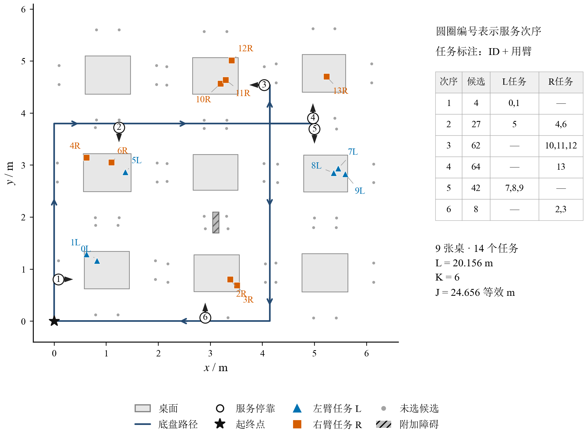
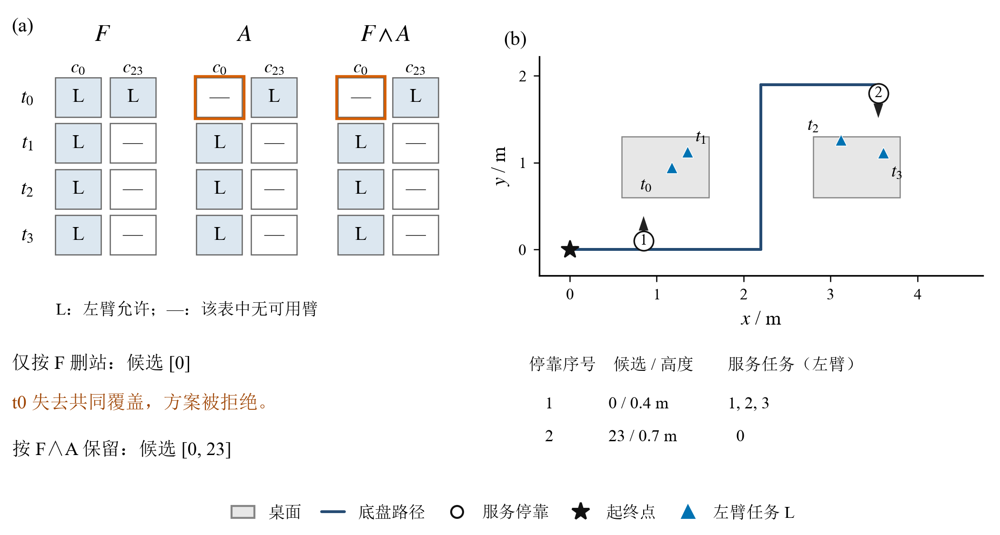
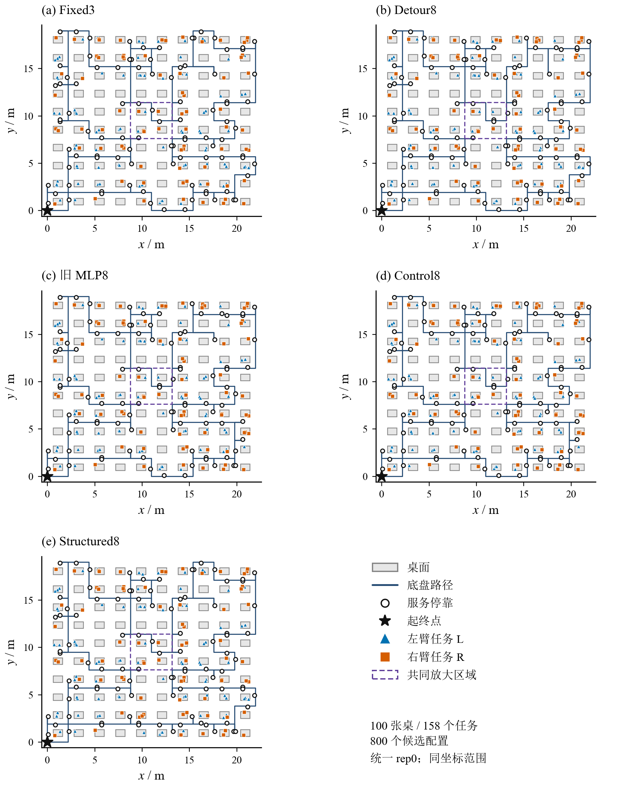
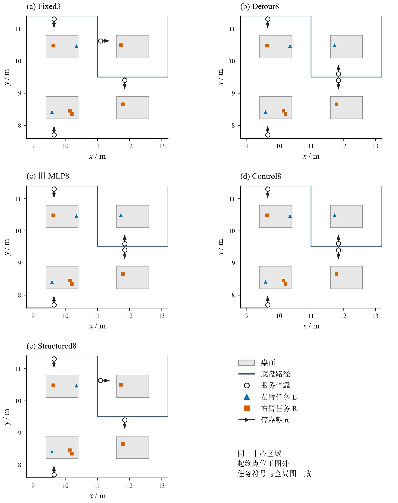

冻结规划记录的论文图表
来自固定JSON记录；没有重新训练、规划或测时。原v4/v5/v5.1保持冻结。图表说明的是代理模型与合成约束，真实标定和IK暂缓。
使用说明 · 图注与论证衔接 · LaTeX插入段
图1：场景、任务与输出
PDF矢量 · SVG · PNG

二维静态桌面任务的完整规划输出示例。 采用保存的3×3场景（seed=771903），包含9张桌、14项任务和72个候选服务配置。浅灰点表示未选候选；蓝色三角形与橙色方形分别为分配给左、右臂的任务，旁注由从0开始的任务ID及用臂L/R组成，细灰引线只连接文字与对应任务点。空心圆中的1–6表示服务次序，黑色短箭头表示停靠朝向，蓝色折线及箭头表示保存的底盘路径，星号为起终点。右侧列出每次停靠的候选与任务分配；灰色斜线区域为附加障碍。该方案L=20.156 m、K=6、J=L+0.75K=24.656等效m。重合行驶段在图中叠加，J为路程与停靠次数的加权成本，不是实测任务耗时。此图用于说明代理约束下的数据与输出形式，不提供真实机械臂轨迹或IK可执行性证据。
图2：共同约束的必要性
PDF矢量 · SVG · PNG

共同约束贯穿路线规范化的必要性：合成约束案例。 场景seed=870001，包含2张桌、4项任务及32个候选配置。（a）仅展示已选候选c0、c23对应的F、A及F∩A；L表示该表允许左臂，横线表示无可用臂。仅按F判断时，c0已覆盖全部任务，c23会被删除，但t0在c0不满足A，因而失去共同覆盖。按F∩A处理则保留c0与c23。（b）保存的成功方案完整底盘折线；空心圆1、2表示服务次序，黑箭头表示停靠朝向，下方列出候选、高度及服务任务。失败方案未绘制为已认证路径。成功方案L=11.3 m、K=2、J=12.8等效m。可达关系及跨桌分配是刻意构造的离散约束，不表示真实机械臂工作空间、操作轨迹或物理可执行性。
图3：固定百桌场景的五方法对照
PDF矢量 · SVG · PNG

同一百桌静态场景的冻结路线对照。 取原测试列表首个百桌场景（seed=1565649625，100张桌、158项任务、800个候选配置），五方法统一使用rep0。Fixed3为零次修复初始参照；Detour8、旧MLP8、Control8与Structured8采用固定8次修复，未混入400 ms软预算记录。各面板具有相同坐标范围、路线颜色和任务标记；空心圆为实际停靠，三角形/方形表示左右臂分配，紫色虚线框为仅由场景导航坐标范围确定的中心区域。保存路径中的重合路段在图中叠加。L、K、J见表1，其中J=L+0.75K为等效路程成本。该单例Structured的J=277.8，高于Detour8的276.2，应保留这一现象；总体方法优劣由完整测试集的配对统计支持，不能由该图推断。
图3补充：共同中心区域
PDF矢量 · SVG · PNG

五方法在同一中心区域的局部放大。 裁剪范围为x∈[8.8,13.2] m、y∈[7.6,11.4] m，分别取保存导航坐标范围在x、y方向的中央20%（面积约占整体包络的4%），不按模型收益或路线差异选择。五面板使用图3相同保存方案与任务符号，黑色短箭头表示停靠朝向，起终点位于视窗外，边界处路线继续延伸。本图帮助辨认停靠与分配变化，不增加独立样本、性能测量或物理验证证据。
表1：同一百桌场景的成本
| 方法 | 修复预算 | L / m | K | J / 等效m |
|---|
| Fixed3 | 0 | 209.550 | 94 | 280.050 |
| Detour8 | 8 | 205.700 | 94 | 276.200 |
| 旧 MLP8 | 8 | 205.100 | 93 | 274.850 |
| Control8 | 8 | 205.100 | 93 | 274.850 |
| Structured8 | 8 | 207.300 | 94 | 277.800 |
同一seed=1565649625、同一rep0。J=L+0.75K，不是实测任务时间；本单例不用于推断总体排名。
CSV数据 · LaTeX表